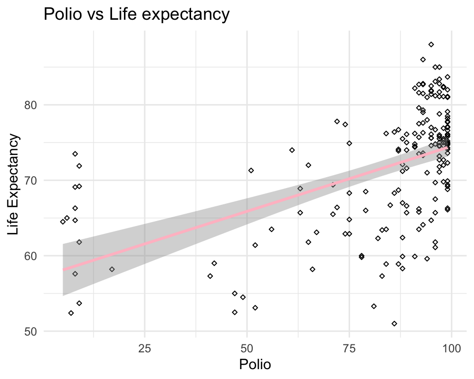

Life Expectancy from WHO Dataset
Shi Tang
10/03/2022
Introduction
Provide background on your dataset and formulated question ### How does immunization coverage affect life expectancy for year 2015? A person’s life expectancy is a statistical measure of the average time is expected to live, based on several factors such as birth, age, and other demographic factors. Indeed, the United Nations estimates a global average life expectancy of 72.6 years for 2019 – which is higher than in any country back in 1950. Therefore, I am interested in exploring the impact of immunization coverage on life expectancy for the year 2015.
The data-set was from Kaggle https://www.kaggle.com/kumarajarshi/life-expectancy-who, and the original data related to life expectancy, health factors for 193 countries have been collected from WHO data repository website and its corresponding economic data was collected from United Nation website.
Methods
include how and where the data were acquired, how you cleaned and wrangled the data, what tools you used for data exploration
Missing values
| Factors | missing (count) | missing (%) |
|---|---|---|
| Country | 0 | 0.000 |
| Year | 0 | 0.000 |
| Status | 0 | 0.000 |
| Life_expectancy | 10 | 0.340 |
| Adult_Mortality | 10 | 0.340 |
| infant_deaths | 0 | 0.000 |
| Alcohol | 194 | 6.603 |
| percentage_expenditure | 0 | 0.000 |
| Hepatitis_B | 553 | 18.822 |
| Measles | 0 | 0.000 |
| BMI | 34 | 1.157 |
| under_five_deaths | 0 | 0.000 |
| Polio | 19 | 0.647 |
| Total_expenditure | 226 | 7.692 |
| Diphtheria | 19 | 0.647 |
| HIV_or_AID | 0 | 0.000 |
| GDP | 448 | 15.248 |
| Population | 652 | 22.192 |
| thinness_1_19_years | 34 | 1.157 |
| thinness_5_9_years | 34 | 1.157 |
| Income_composition_of_resources | 167 | 5.684 |
| Schooling | 163 | 5.548 |
The data-set consists of 22 columns and 2938 rows.

Life Expectancy is normally distributed and is thus fit for prediction using linear regression

| Variable | Adjusted R Squared |
|---|---|
| Adult_Mortality | 0.4847 |
| infant_deaths | 0.03827 |
| Alcohol | 0.1531 |
| percentage_expenditure | 0.1455 |
| Hepatitis_B | 0.0412 |
| Measles | 0.0245 |
| BMI | 0.3125 |
| under_five_deaths | 0.04918 |
| Polio | 0.2128 |
| Total_expenditure | 0.04293 |
| Diphtheria | 0.2258 |
| HIV_or_AID | 0.3094 |
| GDP | 0.185 |
| Population | 4.55e-05 |
| thinness_1_19_years | 0.2227 |
| thinness_5_9_years | 0.2175 |
| Income_composition_of_resources | 0.4793 |
| Schooling | 0.5111 |
| developed | 0.232 |
## # A tibble: 2,938 × 11
## Life_expectancy Adult_Mortality BMI Polio Diphtheria HIV_or_AID
## <dbl> <dbl> <dbl> <dbl> <dbl> <dbl>
## 1 0.545 0.363 0.210 0.0312 0.650 0
## 2 0.448 0.374 0.204 0.573 0.619 0
## 3 0.448 0.370 0.198 0.615 0.639 0
## 4 0.440 0.375 0.192 0.667 0.670 0
## 5 0.434 0.380 0.188 0.677 0.680 0
## 6 0.427 0.385 0.182 0.656 0.660 0
## 7 0.423 0.388 0.176 0.625 0.629 0
## 8 0.414 0.396 0.170 0.635 0.639 0
## 9 0.402 0.407 0.164 0.625 0.629 0
## 10 0.398 0.407 0.159 0.573 0.577 0
## # … with 2,928 more rows, and 5 more variables: thinness_1_19_years <dbl>,
## # thinness_5_9_years <dbl>, Income_composition_of_resources <dbl>,
## # Schooling <dbl>, developed <dbl>##
## Call:
## lm(formula = Life_expectancy ~ ., data = filter_data)
##
## Residuals:
## Min 1Q Median 3Q Max
## -0.41313 -0.04237 -0.00023 0.04498 0.33521
##
## Coefficients:
## Estimate Std. Error t value Pr(>|t|)
## (Intercept) 0.318359 0.009866 32.269 < 2e-16 ***
## Adult_Mortality -0.278548 0.011196 -24.879 < 2e-16 ***
## BMI 0.078130 0.008305 9.407 < 2e-16 ***
## Polio 0.056086 0.008357 6.712 2.3e-11 ***
## Diphtheria 0.076377 0.008368 9.127 < 2e-16 ***
## HIV_or_AID -0.451957 0.017277 -26.159 < 2e-16 ***
## thinness_1_19_years -0.060097 0.027179 -2.211 0.0271 *
## thinness_5_9_years 0.006718 0.027558 0.244 0.8074
## Income_composition_of_resources 0.123597 0.011620 10.637 < 2e-16 ***
## Schooling 0.277891 0.016624 16.716 < 2e-16 ***
## developed 0.041075 0.004595 8.938 < 2e-16 ***
## ---
## Signif. codes: 0 '***' 0.001 '**' 0.01 '*' 0.05 '.' 0.1 ' ' 1
##
## Residual standard error: 0.07981 on 2927 degrees of freedom
## Multiple R-squared: 0.805, Adjusted R-squared: 0.8043
## F-statistic: 1208 on 10 and 2927 DF, p-value: < 2.2e-16##
## Call:
## lm(formula = Life_expectancy ~ ., data = filter_data)
##
## Residuals:
## Min 1Q Median 3Q Max
## -0.41672 -0.04281 -0.00021 0.04496 0.34864
##
## Coefficients:
## Estimate Std. Error t value Pr(>|t|)
## (Intercept) 0.297301 0.008793 33.810 < 2e-16 ***
## Adult_Mortality -0.278786 0.011231 -24.822 < 2e-16 ***
## BMI 0.092274 0.007692 11.996 < 2e-16 ***
## Polio 0.055845 0.008384 6.661 3.23e-11 ***
## Diphtheria 0.077058 0.008395 9.179 < 2e-16 ***
## HIV_or_AID -0.455842 0.017316 -26.325 < 2e-16 ***
## Income_composition_of_resources 0.124425 0.011657 10.674 < 2e-16 ***
## Schooling 0.285471 0.016604 17.193 < 2e-16 ***
## developed 0.044646 0.004542 9.830 < 2e-16 ***
## ---
## Signif. codes: 0 '***' 0.001 '**' 0.01 '*' 0.05 '.' 0.1 ' ' 1
##
## Residual standard error: 0.08009 on 2929 degrees of freedom
## Multiple R-squared: 0.8035, Adjusted R-squared: 0.8029
## F-statistic: 1497 on 8 and 2929 DF, p-value: < 2.2e-16##
## Call:
## lm(formula = Life_expectancy ~ ., data = train)
##
## Residuals:
## Min 1Q Median 3Q Max
## -0.41570 -0.04420 0.00015 0.04597 0.35024
##
## Coefficients:
## Estimate Std. Error t value Pr(>|t|)
## (Intercept) 0.295240 0.010301 28.663 < 2e-16 ***
## Adult_Mortality -0.281972 0.012895 -21.867 < 2e-16 ***
## BMI 0.096917 0.009067 10.690 < 2e-16 ***
## Polio 0.060394 0.010052 6.008 2.19e-09 ***
## Diphtheria 0.073435 0.009747 7.534 7.16e-14 ***
## HIV_or_AID -0.441305 0.019280 -22.890 < 2e-16 ***
## Income_composition_of_resources 0.126052 0.013704 9.198 < 2e-16 ***
## Schooling 0.282551 0.019790 14.277 < 2e-16 ***
## developed 0.041802 0.005291 7.900 4.37e-15 ***
## ---
## Signif. codes: 0 '***' 0.001 '**' 0.01 '*' 0.05 '.' 0.1 ' ' 1
##
## Residual standard error: 0.08063 on 2194 degrees of freedom
## Multiple R-squared: 0.8037, Adjusted R-squared: 0.8029
## F-statistic: 1123 on 8 and 2194 DF, p-value: < 2.2e-16## pred actual
## 1 0.4873101 0.4345
## 2 0.4775310 0.4269
## 3 0.4342675 0.3985
## 4 0.7208007 0.7571
## 5 0.7138759 0.7552
## 6 0.7080222 0.6926## [1] 0.006169641Results
provide final, publication ready tables and figures from your analysis, refer to your website if needed
Conclusions and Summary
To improve the Life Expectancy:
Polio, Hepatitis, Diptheria vaccination coverage should be increased
Measures should be taken to ensure food security
Measures should be taken to provide education and reduce the risks of infant mortality
Resources should be utilized productively
AIDS awarness campaigns should be organized.